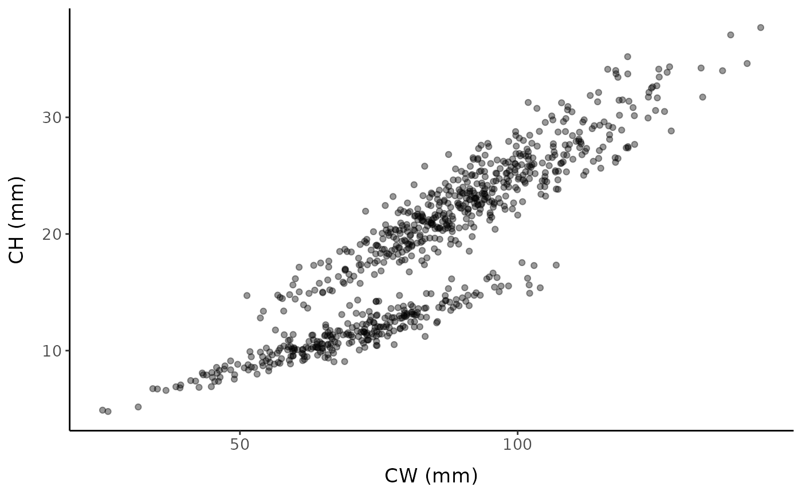

Description
Two-line models differ from broken-stick models because the intersection point of the line representing the immature individuals and the line representing mature individuals is not necessarily the same as the optimal breakpoint value (the value on the x-axis where the y-values switch from being predicted by the immature line to being predicted by the mature line).
We will test two slightly different versions of this approach using code from Crab_Maturity (Stevens, 2020). The first version uses a piecewise regression model to find the x-value/breakpoint that gives the lowest mean square error (MSE) by iteratively testing each observed x-value within the range of unknown maturity. In the second version, the tested x-values are evenly spaced points within the unknown range, and may not equal actual observed values (like REGRANS). The number of (and therefore interval between) points can be user-defined.
The SM50 could be defined as the optimal breakpoint OR as the point at which the two lines actually intersect; i.e. where the regression equations predict the same y-value. The intersection point may be much lower or higher than the previously determined breakpoint and can even be negative, so it is often more reasonable to use the breakpoint as our estimate of SM50.
Two-line: standard
set.seed(123) # set seed for reproducibility
fc <- fake_crustaceans(
error_scale = 17,
slope = 9,
L50 = 75,
n = 800,
allo_params = c(0.9, 0.25, 1.05, 0.2),
x_mean = 85
)
The default function call iterates over 100 evenly-spaced points between the default upper and lower bounds (0.2 and 0.8 quantiles of the x-axis variable) of the region to search for possible SM50 values.
two_line_est <- two_line(fc, "x", "y", verbose = FALSE)
two_line_est
#> breakpoint intersection
#> 88.01449 385.85516The result can be influenced by the number of breakpoints tested:
two_line(fc, "x", "y", verbose = FALSE, num_bps = 200)
#> breakpoint intersection
#> 87.59491 529.48825
two_line(fc, "x", "y", verbose = FALSE, num_bps = 400)
#> breakpoint intersection
#> 87.63043 529.48825Alternatively, possible breakpoints can be restricted to values of the x-axis variable present in the data:
two_line(fc, "x", "y", verbose = FALSE, bps = "obs")
#> breakpoint intersection
#> 88.03361 435.79877Two-line: logistic transition
tll_est <- two_line_logistic(fc, "x", "y", verbose = FALSE)
tll_est
#> SM50
#> 77.93902